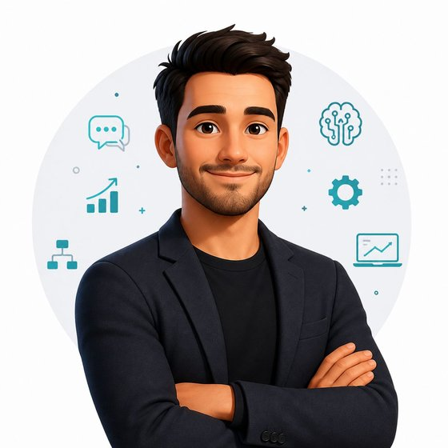

Procesos internos
Mapeo de procesos y del recorrido del cliente, detección de puntos de dolor y definición de qué conviene automatizar.
Ordeno procesos, automatizo con inteligencia artificial y digitalizo la experiencia de compra en concesionarios, grupos automotrices y distribuidores. Para que tu equipo venda más y atienda mejor, sin sumar carga operativa.
Proyectos en México, Argentina y Panamá. Oficinas en Querétaro y Buenos Aires.

Para concesionarios y grupos automotrices, distribuidores de motos, camiones y maquinaria, posventa e importadoras.
Antes de hablar de herramientas, hablamos de lo que pasa todos los días en la operación.
Se contratan por separado o juntos, como un programa de evolución digital completo.
Mapeo de procesos y del recorrido del cliente, detección de puntos de dolor y definición de qué conviene automatizar.
Agentes conversacionales que atienden, califican y dan seguimiento las 24 horas, en todos los canales. Cotizaciones, campañas y encuestas automáticas.
Sitio web, marketplaces, CRM y herramientas digitales que conectan el canal digital con el showroom y la posventa.
Diseño y lanzamiento de nuevos formatos, como tiendas híbridas, outlets de seminuevos y productos digitales, con su estrategia comercial.
Una metodología de mejora continua que integra estrategia, procesos, tecnología, datos e inteligencia artificial. Cada etapa deja un entregable concreto.
Analizo la operación actual, las herramientas y los resultados, y entrevisto al equipo para entender cómo se trabaja hoy.
Documento los procesos como son y como deberían ser, junto con el recorrido completo del cliente.
Identifico cuellos de botella, tareas repetitivas y oportunidades. Defino qué automatizar y qué no.
Pongo en marcha la tecnología, las automatizaciones y las integraciones junto con tu equipo.
Medimos, ajustamos y sumamos nuevas iniciativas sobre lo que ya funciona.
No todos los procesos deben automatizarse. La automatización empieza con un buen diagnóstico.
Por confidencialidad, los proyectos se describen sin el nombre de los clientes.
+200% en generación de leads a través de campañas
+300% en resultados de clientes concesionarios
+20% de crecimiento en cartera de clientes
México
Argentina y México
México, Argentina y Panamá
Cuando el proyecto lo necesita, sumo partners tecnológicos especializados. Yo coordino todo, y tu equipo trata con una sola persona.
Soy Marcelo Uranga, consultor con 20 años de experiencia en la industria de la movilidad. Ayudo a empresas a diseñar e implementar estrategias de automatización con IA, digitalización y experiencia del cliente.
Umarti Digital es la marca con la que desarrollo mis proyectos de consultoría, desde Querétaro y Buenos Aires para toda Latinoamérica y España.
Cuéntame dónde está hoy tu operación y te digo, sin compromiso, por dónde empezaría.